Uso básico

Los cuatro comandos anteriores copian archivos entre el directorio de trabajo, el directorio de preparación (también llamado índice) y el repositorio.
git add filesColoca el archivo actual en el área de preparación.git commitGenera una instantánea del área de preparación y la confirma.git reset -- filesSe usa para deshacer la últimagit add files, también puedes usargit resetpara deshacer todos los archivos en el área de preparación.git checkout -- filesCopia archivos desde el área de preparación al directorio de trabajo para descartar los cambios locales.
Puedes usargit reset -p, git checkout -p, or git add -ppara entrar en el modo interactivo.
También puedes omitir el área de preparación y obtener archivos directamente del repositorio o confirmar código directamente.
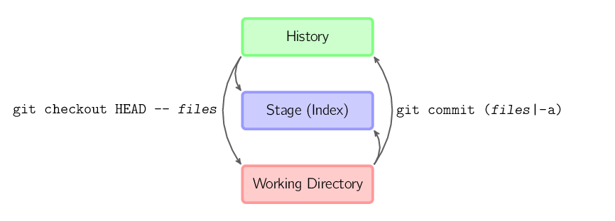
git commit -aEquivale a ejecutargit addagregando todos los archivos del directorio actual al área de preparación y luego ejecutando.git commit.git commit filesRealiza una confirmación que incluye la última confirmación más una instantánea de los archivos del directorio de trabajo. Además, los archivos se agregan al área de preparación.git checkout HEAD -- filesRevierte a la última confirmación copiada.
Convenciones
En el resto del documento se utilizan imágenes con el siguiente formato.
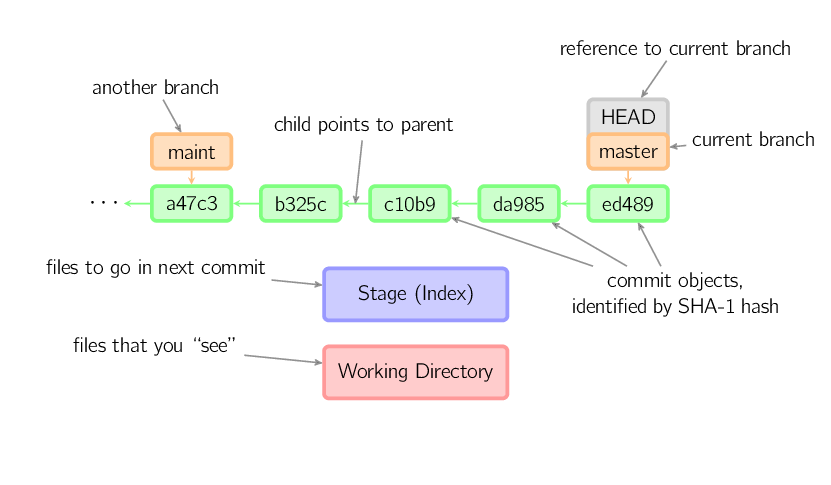
Los caracteres verdes de 5 dígitos representan los IDs de las confirmaciones y apuntan a los nodos padre. Las ramas se muestran en naranja y apuntan a confirmaciones específicas. La rama actual se identifica mediante elHEADpuntero HEAD. Esta imagen muestra las últimas 5 confirmaciones,ed489es la confirmación más reciente.masterLa rama apunta a esta confirmación, la otramaintrama apunta al nodo de confirmación ancestro.
Explicación detallada de los comandos
Diff
Hay muchas formas de ver los cambios entre dos confirmaciones. A continuación se muestran algunos ejemplos.
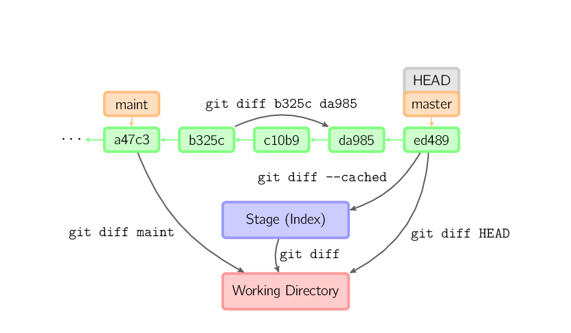
Commit
Al confirmar, git crea una nueva confirmación a partir de los archivos del área de preparación y establece el nodo actual como nodo padre. Luego mueve la rama actual al nuevo nodo de confirmación. En la figura siguiente, la rama actual esmaster. Antes de ejecutar el comando,masterapunta aed489, y después de la confirmación,masterapunta al nuevo nodof0cecy usaed489como nodo padre.
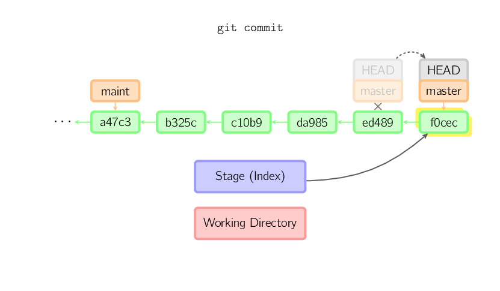
Incluso si la rama actual es ancestro de una confirmación, git hace lo mismo. En la figura siguiente, en elmasternodo ancestro de la ramamaintse realiza una confirmación en la rama, generando1800b. Así,maintla rama ya no esmasterel nodo ancestro de la rama.
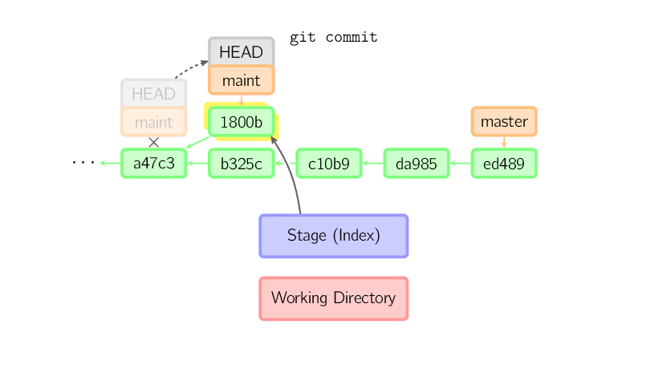
Si deseas modificar una confirmación, usagit commit --amend. git realizará una nueva confirmación con el mismo nodo padre que la confirmación actual; la confirmación anterior se cancelará.
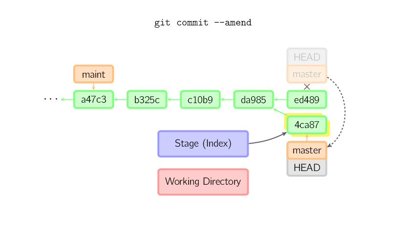
Otro ejemplo es la confirmación con HEAD separado, que se tratará más adelante.
Checkout
El comando checkout se usa para copiar archivos desde una confirmación histórica (o desde el área de preparación) al directorio de trabajo, y también para cambiar de rama.
Cuando se da un nombre de archivo (o se usa la opción -p, o ambas), git copia archivos desde la confirmación especificada al área de preparación y al directorio de trabajo. Por ejemplo,git checkout HEAD~ foo.ccopiará desde el nodo de confirmaciónHEAD~(es decir, el nodo padre de la confirmación actual) el archivofoo.cal directorio de trabajo y lo añadirá al área de preparación.
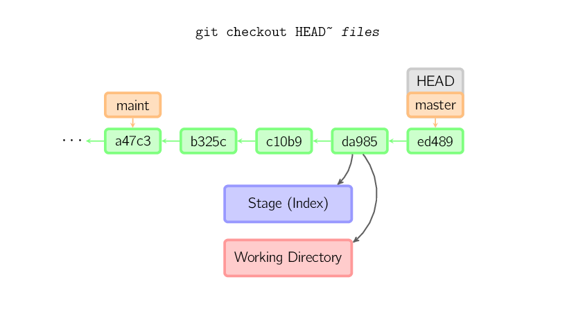
Cuando no se especifica un nombre de archivo, sino una rama (local), entoncesHEADel puntero HEAD se mueve a esa rama (es decir, "cambiamos" a esa rama), y entonces el contenido del área de preparación y del directorio de trabajo coincidirá conHEADel nodo de confirmación correspondiente. Todos los archivos del nuevo nodo de confirmación (a47c3 en la figura inferior) se copian (al área de preparación y al directorio de trabajo); los archivos que solo existen en el nodo de confirmación anterior (ed489) se eliminan; los archivos que no pertenecen a ninguno de los dos se ignoran y no se ven afectados.
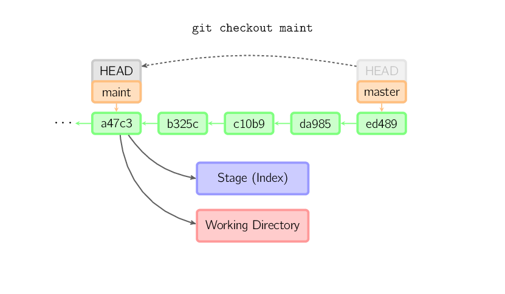
Si no se especifica ni nombre de archivo ni nombre de rama, sino una etiqueta, una rama remota, un valor SHA-1 o algomaster~3similar, se obtiene una rama anónima, llamadadetached HEAD(elHEADidentificador HEAD separado). Esto permite cambiar cómodamente entre versiones históricas. Por ejemplo, si quieres compilar git versión 1.6.6.1, puedes ejecutargit checkout v1.6.6.1(esto es una etiqueta, no un nombre de rama), compilarlo, instalarlo y luego cambiar de nuevo a otra rama, por ejemplogit checkout master. Sin embargo, cuando la operación de confirmación implica un "HEAD separado", su comportamiento es ligeramente diferente; consulta los detalles a continuación.
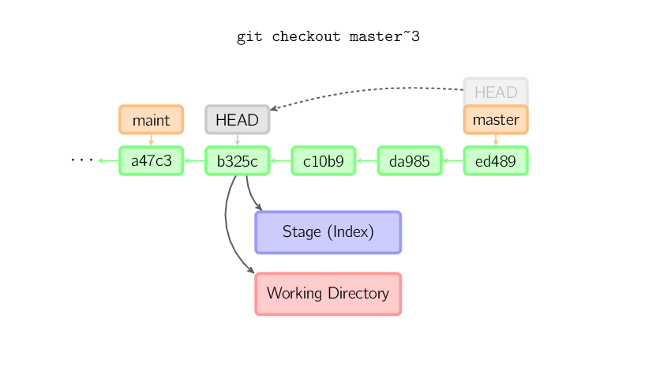
Operaciones de confirmación cuando el puntero HEAD está en estado separado
当HEADAl estar en estado separado (sin estar vinculado a ninguna rama), las operaciones de confirmación pueden realizarse con normalidad, pero no actualizarán ninguna rama con nombre. (Puedes pensar en ello como la actualización de una rama anónima).
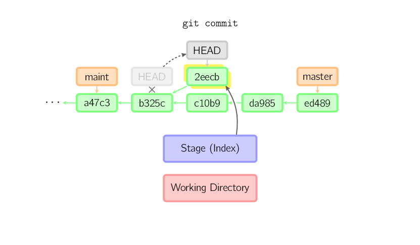
Si después cambias a otra rama, por ejemplomaster, entonces este nodo de confirmación (posiblemente) nunca será referenciado de nuevo y finalmente se descartará. Observa que después de este comando no habrá nada que haga referencia a2eecb。
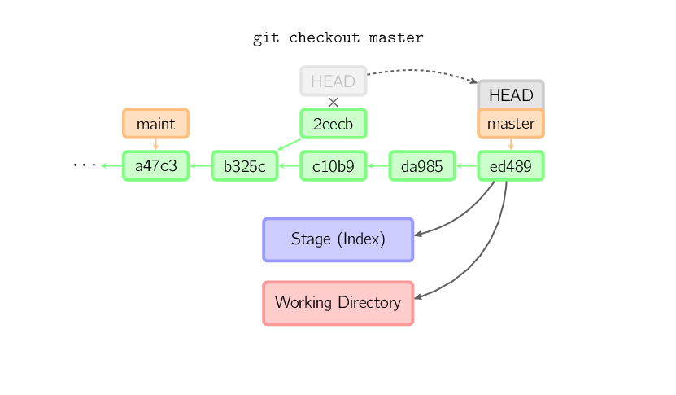
Pero si quieres conservar este estado, puedes usar el comandogit checkout -b namepara crear una nueva rama.
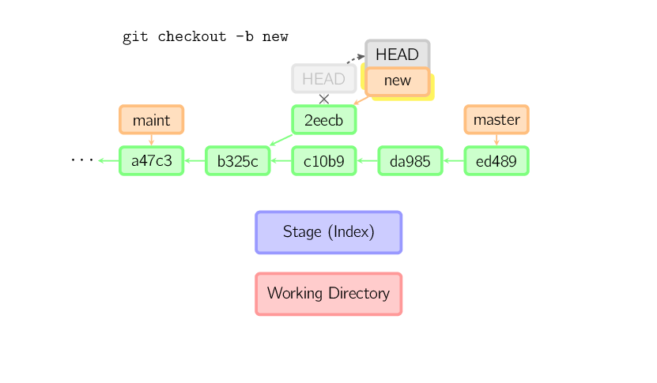
Reset
El comando reset apunta la rama actual a otra ubicación y, opcionalmente, modifica el directorio de trabajo y el índice. También se usa para copiar archivos desde el repositorio histórico al índice sin tocar el directorio de trabajo.
Si no se proporcionan opciones, la rama actual apunta a esa confirmación. Si se usa la opción--hard, el directorio de trabajo también se actualiza; si se usa la opción--soft, nada cambia.
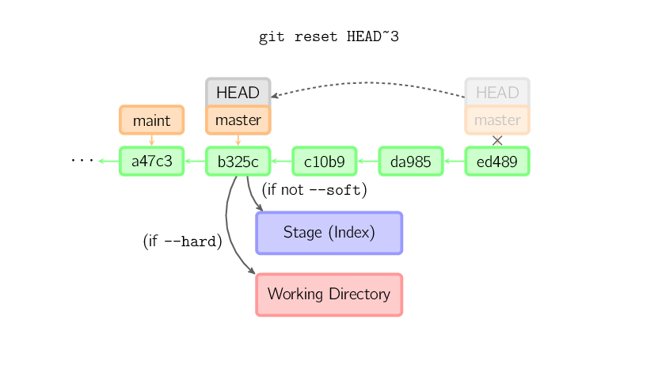
Si no se da una versión de confirmación, por defecto se usaHEAD. De este modo, la rama no cambia de puntero, pero el índice se revierte a la última confirmación; si se usa la opción--hard, el directorio de trabajo también.
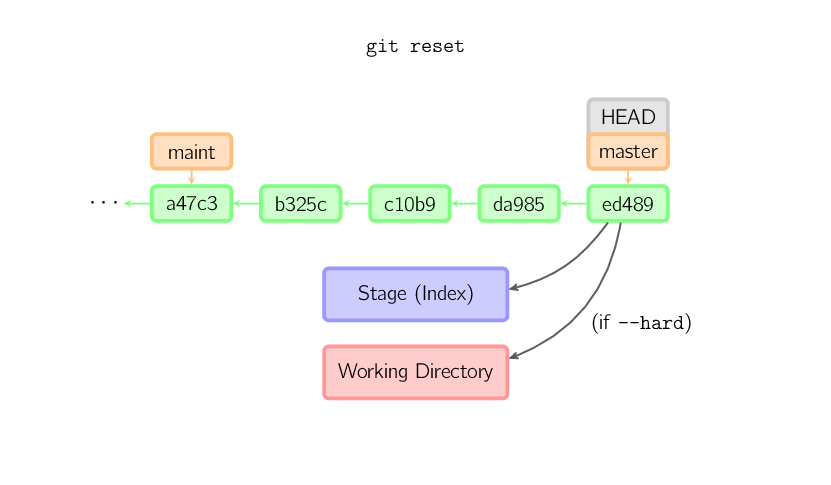
Si se da un nombre de archivo (o la opción-p), el efecto es similar al de un checkout con nombre de archivo, excepto que el índice se actualiza.
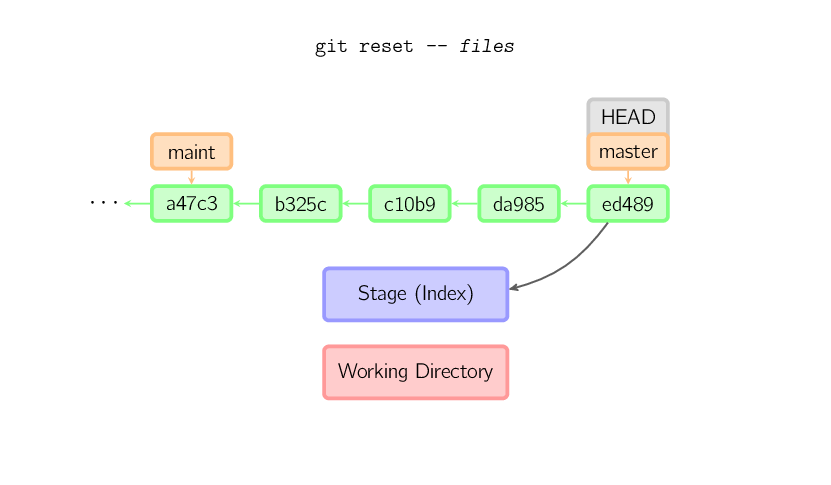
Merge
El comando merge fusiona diferentes ramas. Antes de fusionar, el índice debe coincidir con la confirmación actual. Si la otra rama es un ancestro de la confirmación actual, el comando merge no hará nada. La otra situación es si la confirmación actual es un ancestro de la otra rama, lo que produce unafast-forwardfusión. El puntero simplemente se mueve y no se crea una nueva confirmación.
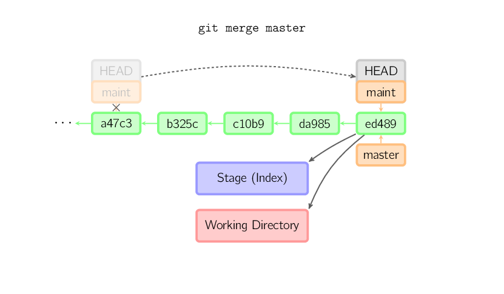
De lo contrario, es una fusión real. Por defecto, la confirmación actual (ed489como se muestra a continuación) y la otra confirmación (33104) y su ancestro común (b325c) se combinan en unafusión a tres bandas. El resultado es que primero se guardan el directorio actual y el índice, y luego, junto con el nodo padre33104se realiza una nueva confirmación.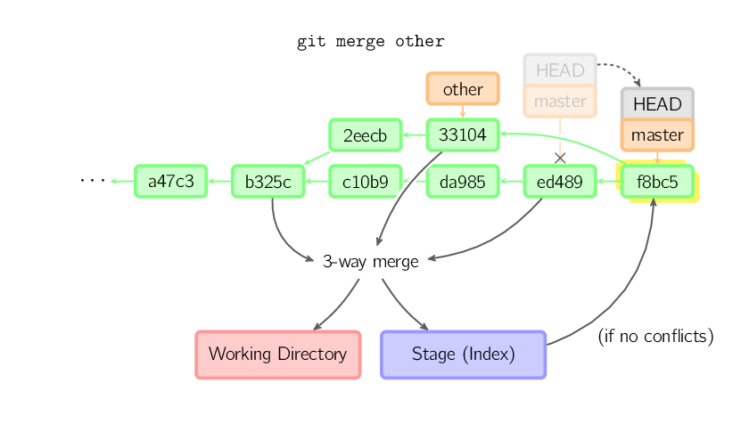
Cherry Pick
El comando cherry-pick "copia" un nodo de confirmación y realiza una nueva confirmación exactamente igual en la rama actual.
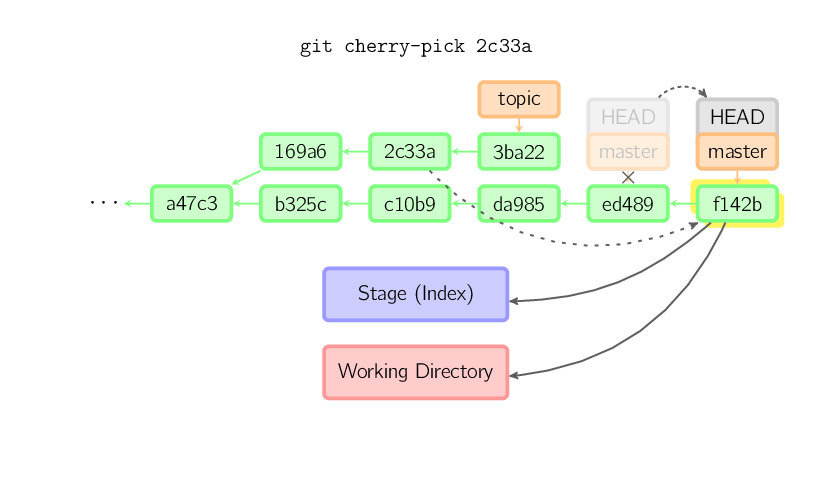
Rebase
El rebase es una alternativa al comando merge. La fusión combina dos ramas padre en una confirmación, por lo que el historial no es lineal. El rebase reproduce la historia de otra rama sobre la rama actual, haciendo que el historial sea lineal. En esencia, es un cherry-pick automático linealizado.
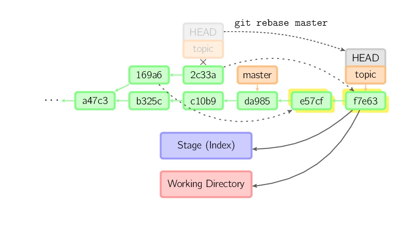
Los comandos anteriores se ejecutan en la ramatopicy no en la ramamaster; en la ramamasterse reproduce la historia, y la rama se mueve al nuevo nodo. Observa que las confirmaciones antiguas no son referenciadas y serán recolectadas.
Para limitar el alcance del rebase, usa la opción--onto. El siguiente comando, en la ramamaster, reproduce los últimos confirmaciones de la rama actual desde169a6en adelante, es decir,2c33a。
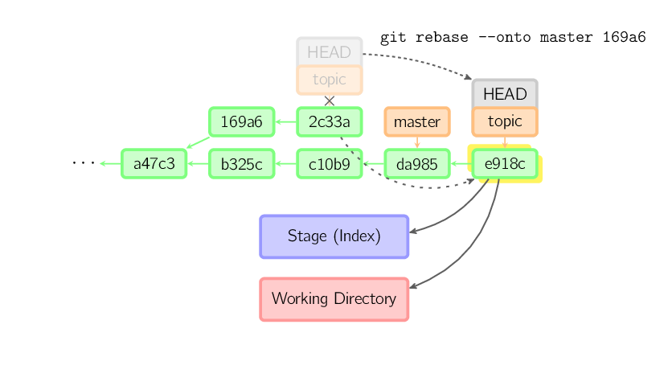
También existegit rebase --interactivepara realizar más fácilmente operaciones complejas como descartar, reordenar, modificar y fusionar confirmaciones. No hay imágenes que muestren esto; consulta los detalles aquí:git-rebase(1)
Notas técnicas
El contenido de los archivos no se almacena realmente en el índice (.git/index) ni en el objeto de confirmación, sino que se almacena por separado en la base de datos como blobs (.git/objects), y se verifica mediante valores SHA-1. El archivo de índice enumera los blobs relevantes y otros datos mediante identificadores. Para las confirmaciones, se almacenan como árboles (tree) de árbol, identificados también por sus valores hash. Los árboles corresponden a las carpetas del directorio de trabajo, y los árboles o blobs contenidos en el árbol corresponden a los subdirectorios y archivos correspondientes. Cada confirmación almacena el identificador del árbol de nivel superior.
Si se confirma con HEAD separado, la última confirmación será referenciada por el reflog de HEAD. Pero después de un tiempo caduca y finalmente se recolecta, al igual quegit commit --amendogit rebasemuy similar.
Enlace original: http://marklodato.github.io/visual-git-guide/index-zh-cn.html
Haz clic para compartir notas
<p style="font-size:14px;">¡Las notas deben ser una extensión del contenido de este artículo!</p><br> <p style="font-size:12px;"><a href="../tougao.html" target="_blank">Para enviar artículos, haga clic aquí</a></p> <p style="font-size:14px;"><a href="./runoob-user-test-intro.html" target="_blank">Cómo obtener el código de invitación de registro</a></p> <h3 class="text-muted"><i class="fa fa-info-circle" aria-hidden="true"></i> Antes de compartir notas, debe <a href=".." class="runoob-pop">iniciar sesión</a>!</h3> <p><a href="./runoob-user-test-intro.html" target="_blank">Cómo obtener el código de invitación de registro</a></p>